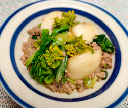

カブと菜の花のそぼろ煮
- 調理時間：20分
- （一人当たり）
- カロリー：156kcal
- たんぱく質：12.2g
- 脂質：6.8g
- 炭水化物：10.5g
- 塩分：1.3g


＜2人分＞
- カブ
- 2～3個
- 鶏ひき肉
- 100g
- 菜の花
- 1本
- 水溶き片栗粉
- 小さじ2
- サラダ油
- 少々
- ・だし汁
- 200ml
- ・みりん
- 小さじ2
- ・醤油
- 小さじ1
- ・塩
- 少々
A


- カブは皮をむいて8等分のくし切りにする。
菜花は4cm長さに切る。 - 鍋に湯を沸かし、カブと菜花を下茹でする。
- 別の小鍋に油を熱し、鶏ひき肉を入れてほぐすように炒める。
色が変わったら、カブとAをいれて煮る。
カブがやわらかく煮えたら、菜花を加える。 - 仕上げに水溶き片栗粉でとろみをつけて完成。
カブと菜の花のそぼろ煮
見て癒され、食べておいしい、春の訪れをつげる菜の花は緑黄色野菜に分類され、栄養価の高い野菜です。味の特徴といえば苦味と辛味ですが、花が咲いてしまうと苦味が強くなるので新鮮なものを選ぶとよいでしょう。注目したい栄養素は、ビタミンＣやβ-カロテン。抗酸化作用があり、美肌や風邪予防の効果が期待できます。β-カロテンやビタミンEは脂溶性なので、肉類や油と一緒に調理することがおすすめです。